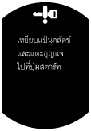
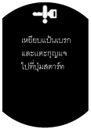

ระบบปุ่มกดสตาร์ท [ระบบกุญแจรีโมทอัจฉริยะ]
id091400111633
รายละเอียด
• ระบบปุ่มกดสตาร์ทถูกนำมาใช้เพื่อทำการอนุญาตตัวส่งสัญญาณรีโมที่อยู่ภายในรถโดยอัตโนมัติ
• ชุดเปิด/ปิดการทำงานจะดำเนินการฟังก์ชัน Fail-Safe ของระบบปุ่มกดสตาร์ท (ดูที่
ชุดเปิด/ปิดการทำงาน)
การทำงาน
• เมื่อปุ่มกดสตาร์ทถูกกด ระบบปุ่มกดสตาร์ทจะทำการอนุญาตตัวส่งสัญญาณรีโมทที่อยู่ในรถ
-
― การสตาร์ทเครื่องยนต์: เมื่อมีการอนุญาตตัวส่งสัญญาณรีโมทขณะตรวจพบสภาวะการสตาร์ทเครื่องยนต์ เครื่องยนต์จะสตาร์ท
― การสลับแหล่งจ่ายไฟ: เมื่อมีการอนุญาตตัวส่งสัญญาณรีโมท สามารถสลับสวิตช์สตาร์ทระหว่าง OFF, ACC และ ON (เครื่องยนต์ทำงาน)
• ฟังก์ชั่นคำแนะนำจะแสดงวิธีการแก้ไขปัญหา เช่น มีสภาวะไม่เพียงพอสำหรับการสตาร์ทเครื่องยนต์ หรือมีปัญหาในการอนุญาตตัวส่งสัญญาณรีโมท หรือไม่สามารถปลดล็อคพวงมาลัย ในหน้าจอ TFT LCD (รุ่นที่มีหน้าจอ TFT LCD)
ภาพโครงสร้าง
ผังวงจรระบบ
การทำงาน
การตรวจสอบตัวส่งสัญญาณรีโมท
1. เมื่อกดปุ่มกดสตาร์ท สัญญาณของปุ่มกดสตาร์ทจะถูกส่งไปยังชุดเปิด/ปิดการทำงาน
2. เมื่อชุดเปิด/ปิดการทำงานตรวจพบสัญญาณของปุ่มกดสตาร์ท จะมีการส่งสัญญาณคำสั่งขาออกของการขอการทำงานไปยังชุดควบคุมด้านหน้าซ้าย
3. เมื่อชุดควบคุมด้านหน้าซ้ายตรวจพบสัญญาณคำสั่งขาออกของการขอการทำงาน จะส่งสัญญาณขอการทำงานโดยใช้เสาอากาศกุญแจรีโมททั้งหมดที่อยู่ภายในรถ
4. ตัวส่งสัญญาณรีโมทจะได้รับสัญญาณขอการทำงานจากเสาอากาศกุญแจรีโมทภายใน และส่งข้อมูล ID ไปยังตัวรับสัญญาณกุญแจรีโมท
5. ตัวรับสัญญาณกุญแจรีโมทจะส่งข้อมูล ID ที่ได้รับไปยังชุดเปิด/ปิดการทำงาน
6. ชุดเปิด/ปิดการทำงานจะตรวจสอบข้อมูล ID และหากข้อมูลตรงกัน การล็อคพวงมาลัยในโมดูลจะถูกปลด และแหล่งจ่ายไฟจะถูกสลับพร้อมกับไฟแสดงสถานะปุ่มกดสตาร์ท (สีเหลือง) ติดสว่าง สำหรับรายละเอียดเกี่ยวกับการสลับแหล่งจ่ายไฟ โปรดดูที่การสลับแหล่งจ่ายไฟ
การสตาร์ทเครื่องยนต์
-
• มีการอนุญาตตัวส่งสัญญาณรีโมท และสตาร์ทเครื่องยนต์โดยการกดปุ่มกดสตาร์ทเมื่อตรวจพบสถาวะต่อไปนี้ทั้งหมด:
สภาวะการสตาร์ทเครื่องยนต์
-
― แป้นคลัตช์ถูกเหยียบ (MTX)
― แป้นเบรกถูกเหยียบ (ATX)
― คันเกียร์อยู่ที่ตำแหน่ง P หรือ N (ATX)
― ตัวส่งสัญญาณรีโมทอยู่ภายในระยะการส่งสัญญาณขอการทำงานของเสาอากาศกุญแจรีโมทภายในรถ
-
โหมดสำรอง (MTX) สำหรับการสตาร์ทเครื่องยนต์
-
• หากชุดเปิด/ปิดการทำงานระบุว่าสวิตช์ตำแหน่งแป้นคลัตช์ หรือสวิตช์ตัดการทำงานของคลัตช์ทำงานบกพร่อง ระบบจะเปลี่ยนเป็นโหมดสำรอง
• หากปุ่มกดสตาร์ทถูกกดเมื่อตรวจพบสภาวะต่อไปนี้ทั้งหมดขณะอยู่ในโหมดสำรอง จะมีการอนุญาตตัวส่งสัญญาณรีโมท และจะสตาร์ทเครื่องยนต์
-
― ชุดเปิด/ปิดการทำงานตรวจพบว่าสวิตช์ตำแหน่งแป้นคลัตช์หรือสวิตช์ตัดการทำงานคลัตช์อยู่ที่ On
― ได้รับสัญญาณสวิตช์เกียร์ว่างผ่านการสื่อสารระบบ CAN จาก PCM
― ตัวส่งสัญญาณรีโมทอยู่ภายในช่วงการส่งสัญญาณขอการทำงานของเสาอากาศกุญแจรีโมทภายในรถ
ฟังก์ชั่นคำแนะนำ
-
หน้าจอคำแนะนำสำหรับการสตาร์ทเครื่องยนต์
-
• หากตรวจพบสถาวะการสตาร์ทเครื่องยนต์ทั้งหมด ไฟแสดงสถานะกุญแจ (สีเขียว) ในแผงหน้าปัดและไฟแสดงสถานะปุ่มกดสตาร์ท (สีเขียว) จะติดสว่าง
• ภายใต้สถาวะต่อไปนี้ ชุดเปิด/ปิดการทำงานจะส่งสัญญาณขอคำแนะนำผ่านระบบ CAN ไปยังแผงหน้าปัด
• เมื่อแผงหน้าปัดได้รับสัญญาณขอคำแนะนำ แผงหน้าปัดจะแสดงสภาวะซึ่งไม่สามารถตรวจพบสำหรับการสตาร์ทเครื่องยนต์ในหน้าจอ TFT LCD (รุ่นที่มีหน้าจอ TFT LCD)
|
สภาวะ
|
หน้าจอ TFT LCD
|
|
บิดสวิตช์สตาร์ทไปที่ ON (เครื่องยนต์ไม่ทำงาน) จากตำแหน่ง OFF (LOCK) โดยไม่ได้เหยียบแป้นคลัตช์ (MTX)
|
|
|
บิดสวิตช์สตาร์ทไปที่ ON (เครื่องยนต์ไม่ทำงาน) จากตำแหน่ง OFF (LOCK) โดยไม่ได้เหยียบแป้นเบรก (ATX)
|
|
|
บิดสวิตช์สตาร์ทไปที่ ON (เครื่องยนต์ไม่ทำงาน) และคันเกียร์ไม่อยู่ในตำแหน่ง P เมื่อกดปุ่มกดสตาร์ท (ATX)
|
|
-
แสดงวิธีการแก้ไขปัญหา
-
• ในสภาวะต่อไปนี้ ปุ่มกดสตาร์ทจะส่งสัญญาณขอการเตือนผ่านระบบ CAN ไปยังแผงหน้าปัดเพื่อกะพริบไฟแสดงสถานะปุ่มกดสตาร์ท (สีเขียว)
• เมื่อแผงหน้าปัดได้รับสัญญาณขอการเตือน จะแสดงวิธีการแก้ไขปัญหาในหน้าจอ TFT LCD (รุ่นที่มีหน้าจอ TFT LCD)
|
สภาวะ
|
แผงหน้าปัด
|
ปุ่มกดสตาร์ท
|
|
เสียงเตือนกุญแจรีโมท
|
ไฟเตือนกุญแจ (สีแดง)
|
หน้าจอ TFT LCD
|
ไฟแสดงสถานะ (สีเขียว)
|
|
ไม่สามารถตรวจสอบข้อมูล ID
|
―
|
กะพริบ
|
 |
―
|
|
(MTX)
|
|  |
|
(ATX)
|
|
ไม่สามารถปลดล็อคพวงมาลัย
|
รูปแบบ C*1
|
―
|
 |
กะพริบเป็นเวลา 10 วินาที
|
*1 :สำหรับรูปแบบเสียงของเสียงเตือนกุญแจรีโมท โปรดดูที่เสียงเตือนกุญแจรีโมท (ดูที่
เสียงเตือนกุญแจรีโมท)